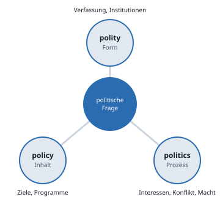
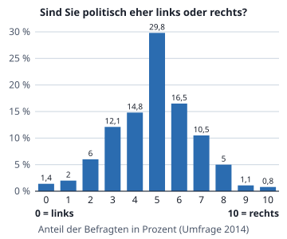
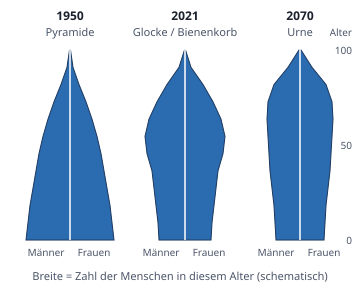
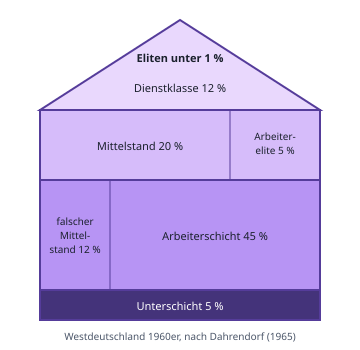

Medienübersicht
Alle Bilder, Audios und Videos dieser App mit ihrer Quelle und ihrer Lizenz.
Bilder

images/politik-sinn.svgQuelle: eigene Zeichnung. Lizenz: CC-BY-4.0.Verwendet auf: Politisch oder nicht?

images/drei-dimensionen.svgQuelle: eigene Zeichnung. Lizenz: CC-BY-4.0.Verwendet auf: polity, policy, politics

images/links-rechts-umfrage.svgQuelle: eigene Zeichnung. Lizenz: CC-BY-4.0.Verwendet auf: Links und rechts

images/links-rechts-schema.svgQuelle: eigene Zeichnung. Lizenz: CC-BY-4.0.Verwendet auf: Das Links-Rechts-Schema

images/altersformen.svgQuelle: eigene Zeichnung. Lizenz: CC-BY-4.0.Verwendet auf: Altersstruktur

images/fachkraefte-umfrage.svgQuelle: eigene Zeichnung. Lizenz: CC-BY-4.0.Verwendet auf: Wandel und Arbeitsmarkt

images/gini.svgQuelle: eigene Zeichnung. Lizenz: CC-BY-4.0.Verwendet auf: Dezile und Gini

images/pisa-herkunft.svgQuelle: eigene Zeichnung. Lizenz: CC-BY-4.0.Verwendet auf: Bildung und Herkunft

images/vier-modelle.svgQuelle: eigene Zeichnung. Lizenz: CC-BY-4.0.Verwendet auf: Modelle im Überblick

images/basis-ueberbau.svgQuelle: eigene Zeichnung. Lizenz: CC-BY-4.0.Verwendet auf: Klassentheorie nach Marx

images/dahrendorf-haus.svgQuelle: eigene Zeichnung. Lizenz: CC-BY-4.0.Verwendet auf: Schichtmodelle

images/bolte-zwiebel.svgQuelle: eigene Zeichnung. Lizenz: CC-BY-4.0.Verwendet auf: Schichtmodelle

images/sinus-milieus.svgQuelle: eigene Zeichnung. Lizenz: CC-BY-4.0.Verwendet auf: Soziale Milieus

images/konfliktlinien.svgQuelle: eigene Zeichnung. Lizenz: CC-BY-4.0.Verwendet auf: Gespaltene Gesellschaft?